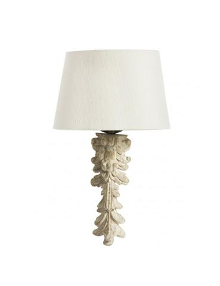
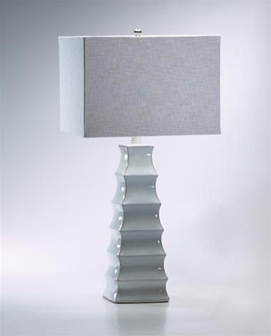

Fall '16 Line
Our fall line is has just arrived. We have signiture pieces from lamp artists: Ginovo Katani, Jon Sontos, Larry Steel, and the famous Pierre L'enfant. Unique lighting opportunities for your home, including wall sconces, chandeliers, pendants & table lamps with sophisticated shades & metal accents.
Summer '16 Line
If you are looking accent lighting that is grander than the run of the mill, you've found your haven. Enjoy custom lighting designs by Robert Abbey, LightsUp, Barbara Cosgrove, Currey & Company, and more. All of these lines custom-make their designer table lamps, pendant lighting fixtures and wall sconce lights to order and they are true works of art. If you like unique, contemporary home decor, then the accent lighting, designer table lamps and the rest of our designer lamps and lighting are going to be right up your alley. Live every day with fabulous accent lighting!